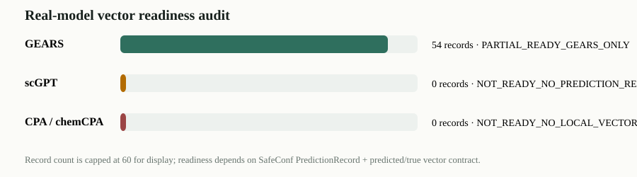

E18 真实模型预测向量资产审计
检查 GEARS、scGPT、CPA 是否已有能进入 SafeConf 协议的逐任务 predicted/true vector。重点不是模型名，而是能不能对齐 task_id、gene_order 和预测向量。

1. 模型级就绪度
| model | local_code_or_data | prediction_records | runs_or_seeds | datasets | gene_space | predicted_vectors | true_vectors | native_uncertainty | proxy_uncertainty | score_rows | readiness | blocking_reason | next_action |
|---|---|---|---|---|---|---|---|---|---|---|---|---|---|
| GEARS | True | 54 | 9 | 3 | 5025,5043,6000 | True | True | False | True | 5 | PARTIAL_READY_GEARS_ONLY | Records/vectors exist, but only for GEARS on Norman/Adamson/Dixit single-gene tasks; not aligned to sciplex3 full-743, CPA or scGPT; native uncertainty absent. | Use as GEARS-only supplement or rerun/align GEARS with the same task_id/gene order as current benchmarks. |
| scGPT | True | 0 | 0 | 0 | False | False | False | False | 0 | NOT_READY_NO_PREDICTION_RECORDS | Local environment/archive exists, but no SafeConf PredictionRecord + predicted_effect vectors were found. | Implement or locate a scGPT adapter that exports PREDICTION_RECORDS.csv plus predicted/true NPZ on a frozen benchmark. | |
| CPA / chemCPA | False | 0 | 0 | 0 | False | False | False | False | 0 | NOT_READY_NO_LOCAL_VECTOR_OUTPUT | Only literature/PDF traces were found; no local CPA vector outputs under the SafeConf contract. | Treat CPA as future external adapter work; do not claim completed CPA validation. |
2. GEARS 运行与数组审计
| dataset | seed | status | records_n_rows | records_csv_repaired_exists | predicted_npz_repaired_exists | predicted_npz_n_keys | predicted_npz_first_shape | predicted_keys_match_records | true_npz_repaired_exists | true_npz_n_keys | true_keys_match_records |
|---|---|---|---|---|---|---|---|---|---|---|---|
| norman | 1 | ok | 10 | True | True | 10 | 5025 | True | True | 10 | True |
| norman | 2 | ok | 10 | True | True | 10 | 5025 | True | True | 10 | True |
| norman | 3 | ok | 10 | True | True | 10 | 5025 | True | True | 10 | True |
| adamson | 1 | ok | 7 | True | True | 7 | 5043 | True | True | 7 | True |
| adamson | 2 | ok | 7 | True | True | 7 | 5043 | True | True | 7 | True |
| adamson | 3 | ok | 7 | True | True | 7 | 5043 | True | True | 7 | True |
| dixit | 1 | ok | 1 | True | True | 1 | 6000 | True | True | 1 | True |
| dixit | 2 | ok | 1 | True | True | 1 | 6000 | True | True | 1 | True |
| dixit | 3 | ok | 1 | True | True | 1 | 6000 | True | True | 1 | True |
3. GEARS 数据集规模
| dataset_name | n_records | n_unique_perturbations | n_seeds | mean_rmse | median_rmse | mean_cosine_error |
|---|---|---|---|---|---|---|
| adamson | 21 | 18 | 3 | 0.042086 | 0.034761 | 0.631153 |
| dixit | 3 | 2 | 3 | 0.424841 | 0.371982 | 0.306773 |
| norman | 30 | 27 | 3 | 0.055878 | 0.052180 | 0.671322 |
4. 已有 GEARS 风险分数
| level | dataset_family | dataset_name | score_name | score_type | n | spearman_score_vs_rmse | direction_aligned_spearman | mean_rmse | risk_cov_improve_pct |
|---|---|---|---|---|---|---|---|---|---|
| dataset | gears_supplement | adamson | gears_prediction_magnitude_risk | risk | 21 | 0.422078 | 0.422078 | 0.042086 | 0.812960 |
| dataset | gears_supplement | dixit | gears_prediction_magnitude_risk | risk | 3 | 0.500000 | 0.500000 | 0.424841 | 0.000000 |
| dataset | gears_supplement | norman | gears_prediction_magnitude_risk | risk | 30 | 0.623582 | 0.623582 | 0.055878 | 7.609899 |
| family | gears_supplement | ALL | gears_prediction_magnitude_risk | risk | 54 | 0.623937 | 0.623937 | 0.071013 | NaN |
| overall | ALL | ALL | gears_prediction_magnitude_risk | risk | 54 | 0.623937 | 0.623937 | 0.071013 | NaN |
5. 边界
GEARS 有可读向量，但它不是 sciplex3 full-743 同任务空间；scGPT/CPA 当前没有 PredictionRecord + predicted/true NPZ。不能声称真实多模型验证已经完成。